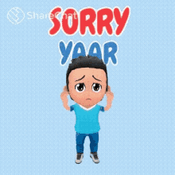
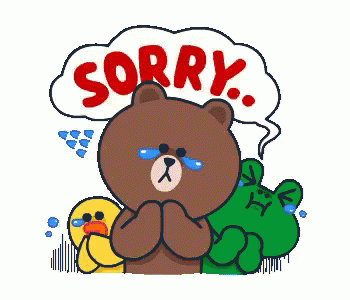

Dear Manu,
I know I have not behaved well with you 😢. I have made a mistake. I totally accept my mistake. I have been thinking of you all the time. I put myself in your place and analysed the entire thing again. I have realised how wrong I was when I said such a useless thing to you 😣. I did not think before speaking. I know I got a bit excited. The excitement did not allow me to think before speaking. I had not talked to you for a long time. This made me restless. I just could not control and said the words without applying brains to it. I feel the guilt. I have been repenting all the time 😣. I have spent my time thinking about you and my mistake. I have not been able to take my mind off it. I did not even talk to anyone much and even was inactive on social media. I admit that I have made a mistake 😢. I am writing this letter to seek an apology from you 🙏.
I was always prone to doing dumb mistakes, but breaking your heart is something I cannot accept. No matter how many times you refuse to forgive me, I will keep trying. Because my love for you is something that cannot be easily forgotten. I know that my actions have damaged the bond that the two of us share 😔, but I am asking you to forgive me because I cannot live without you beside me. I cannot believe that I managed to break the heart of such a beautiful creature like you. I am a giant fool for not being more careful of my words and actions 😔. You have always been more mature than me, and you have this sense of forgiveness that always comes to play when I do stupid things. So I am begging you to forgive me one last time, I am terribly sorry for what I have done 😟. It’s been a long day without you, I cannot stand this feeling of loneliness, and it pains me to see you get hurt, especially when I am the one to blame. You truly are the woman of my life. I am terribly sorry 😢.
You truly are the best thing you have happened in my life. I know that you do not deserve an idiot like, yet, I want to become selfish and ask you to forgive me and take me back 😟. Even though I don’t deserve it, would you ever be able to find it in your heart to forgive me? I want another chance to win your affections.I promise you that I will be a better person from now on and I will never hurt you again. I promise you that I will put more effort into our relationship so that it goes a long way. I am sorry please stay with me.😞 I did not mean any of the harsh words I said earlier. I am sorry for being immature. I can never think of hurting you intentionally, whatever I did I have done mistakenly. I should have been careful about what I say, I did not want to hurt you 😓. I am very fortunate to meet someone like you. Please don’t go away, you are my life. For all the times you have not slept well and you cried because of me, I apologize for all those sleepless nights. Please forgive me.🙏
You are my strength, yet you are angry with me. I feel very weak and exposed 😖. Please accept my deepest apologies and let us unite again. We are not meant to be apart. I have an utmost trust in the God and i know that you will forgive me soon. Till then I am waiting. Your main objective for this separation is to make me realize my mistakes. I understand now and I am very sorry baby 😥. I was being stupid. Please come back now. I have been missing you a lot these days. I am dying to talk to you 😔. All the time that I am awake is spent reading our old chats. For me that's the only way right now to talk to you or feel the conversations. It is pretty hard to not talk to you. Reading chats can only provide an intermediate support but cannot equal the pleasure of talking to you 😖. I have been very angry with myself. I must have given myself thousands of bad words for my actions. I feel a lot of guilt. I have been feeling bad for hurting you. No one is perfect and I know I have more faults than other people but you are the only one I have given my heart because I knew it that only you are meant to hold it. I can't believe what a fool I was to treat you the way I did on that day 😰.
You are an amazing, strong woman. Thank you for standing up to me, showing me how wrong I was, and forcing me to take a good, hard look at myself in the mirror. I didn’t like what I saw, so I’ve made some changes. Please forgive me and give me a chance to show you how I’ve changed 😣. We all make mistakes, some are big some are small. But I don’t think that we should let our mistakes define us. So please, remember all the good things we’ve been through, and imagine the ones we will go through in the future. And when you do that, please reconsider your decision and forgive me for all I’ve done 😢. I know that I am a terrible person, I know I am a fool, but at least, I’m your fool. I am sorry, forgive me for what I’ve done 😞. Please forgive me for not living up to the image I tried to portray 😔. In the future, if you forgive me, I’ll work hard to make sure my actions match my words 😟! Please forgive my foolish, insensitive words and actions and allow me the chance to change and grow into the kind of man you truly deserve. Take your time. With a bruised heart and a deflated ego, with sad soul and a head hung low. I apologize to you unconditionally, Manu I am really very sorry 😭😭😭😭🙏🙏🙏. I love you ❤❤❤❤❤.
Yours Truly,
Yash
Written from my heart that belongs to you❤❤❤❤❤❤.
Please forgive me if possible 😭😭🙏🙏🙏
Some of my friends also wanted to help me seek apology from you. Pleas consider their request along with mine. Please forgive me please 😭😭🙏.


